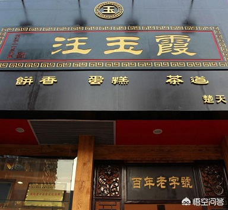
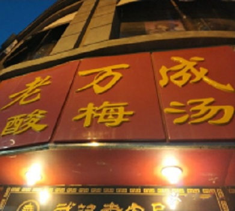

-

汪玉霞
它创建于乾隆四年（1739年）说起汪玉霞糕点，
很多老武汉人一定立马就想到那句流传很久的歇
后语，“汪玉霞的咸酥饼——绝酥（劫数）”。两百
多年来，独属于它的味道早已深入人心。 -
五芳斋
武汉五芳斋是武汉的老字号，地处武汉中山大道713号。
在汤圆、粽子市场，品牌号召力极强，老武汉人对五芳斋
和元宵节的固执捆绑，促成了每年长达一个星期的壮观场
面。每年从正月初十开始，五芳斋会关掉整个堂食餐饮，
只卖速冻汤圆。店门口直接三台收银机，买票、领汤圆，
两条长队，店旁边的窄巷里，是团购批发的聚集地. -
蔡林记
蔡林记是一家经营热干面系列小吃为特色，近百年
的老字号小吃面馆。其热干面，晶洁爽口，味道鲜
美，深受广大市民的赞赏，享有武汉名小吃的美誉。 -

老万成
武汉市百年老字号，主营酸梅汤。老万成始创于1910年，
是由四个股东共同投资9000多大洋开办起来的。老武汉人
都觉得“老万成”与“酸梅汤”就是一个意思”——老万成
就是做酸梅汤的，其实际制作酸梅汤有100余年历史。 -
袁森泰
袁家最早开始做汤是在十九世纪的30年代，
鸡汤、鸭汤和八卦汤等，鲜香可口，久负盛
名。在这里来往喝汤的大都是年龄偏大的老
武汉人。 -
曹祥泰
曹祥泰在武汉已有143年的历史，他们家的
绿豆糕味道是所有武汉人心中的NO.1